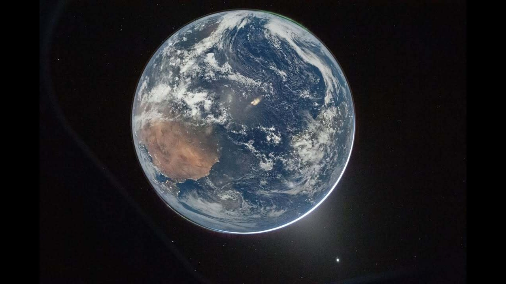
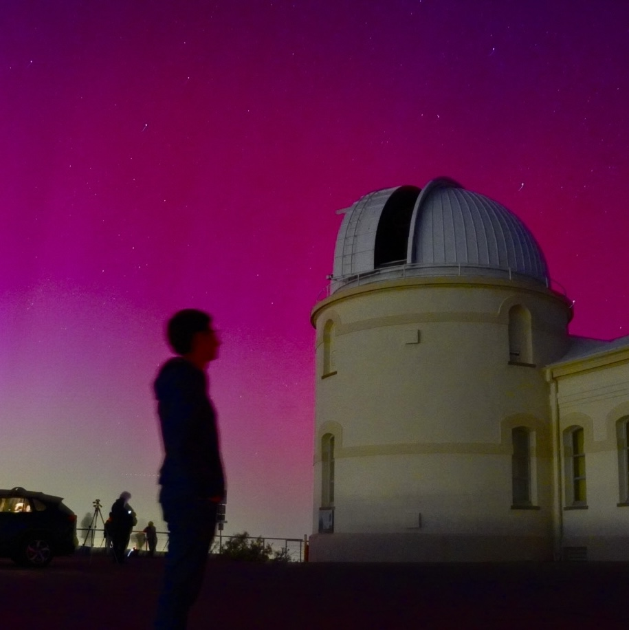

Research
Red geyser galaxies, quenching, and the cool gas that feeds dormant black holes.
Welcome! I am a third-year undergraduate at the University of California, Santa Cruz studying Physics (Astrophysics). I also do research at Johns Hopkins University with Prof. Timothy Heckman, where I study why some galaxies stop forming stars.
My main project looks at red geyser galaxies — a class of galaxies that are surprisingly quiet despite having plenty of gas. Using SDSS MaNGA data, I study how cool gas flows in and around 140 of these galaxies and how that connects to their central black holes. I have two first-author papers on this (one in The Astrophysical Journal, one in prep.), and I am a Goldwater Scholar.
Feel free to reach out if you want to chat about the research or collaborate!
Red geyser galaxies, quenching, and the cool gas that feeds dormant black holes.

Science communication, mentoring, and community engagement — in English, Farsi, and beyond.

A bit about me and my path to astrophysics.

Publications, awards, observing programs, and full academic record.